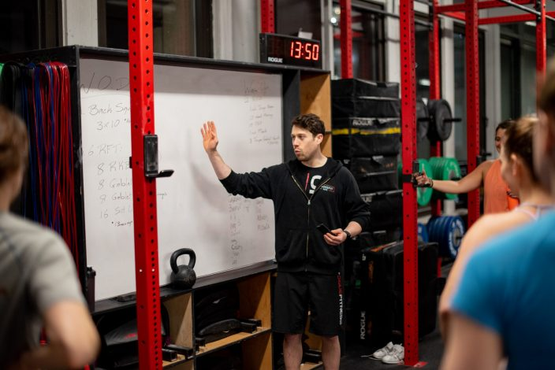

ABOUT CROSSFIT NYC
The oldest and largest CrossFit in New York
OUR STORY
CrossFit NYC was the first CrossFit affiliate in New York City and is one of the five oldest CrossFit affiliates in the world (2005).
At CrossFit NYC, we are focused exclusively on our members. We do not accept visitors, guests, or drop-ins. When you come to CrossFit NYC, you know that the people around you are all regular members, who share a vested interest in the health and safety of one another.
We have supervised more CrossFit workouts than any affiliate in the world.Our workouts are well planned and include scaling and substitution options which allow beginners(including those who are older, less fit, or recovering from injuries) to proceed safely, while also challenging advanced athletes.
Those who are new to CrossFit start with two hours of private training with an experienced coach, included in a one-month (no further obligation)trial membership. (If you have experience with CrossFit and can skip introductory lessons, let us know.)
Our facilities have more space per member than anywhere else in the City,with over 6,000 square feet in Flatiron for a maximum of 24 people, and over 4,500 square feet in Lincoln Square for a maximum of 18 people.When you reserve a session at CrossFit NYC, you are guaranteed the space and the individual equipment you will need will be available when you arrive.
If you’re wondering whether CrossFit NYC is right for you,just ask yourself whether you want to improve your fitness (regardless of where you are starting from)? If your answer is yes, then we want you as a member, and we will work hard with you to accomplish your goals.